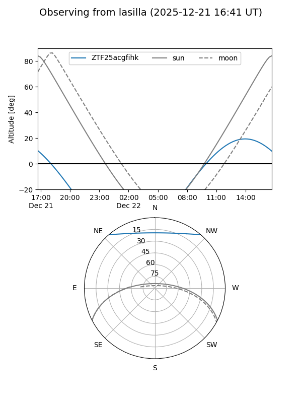
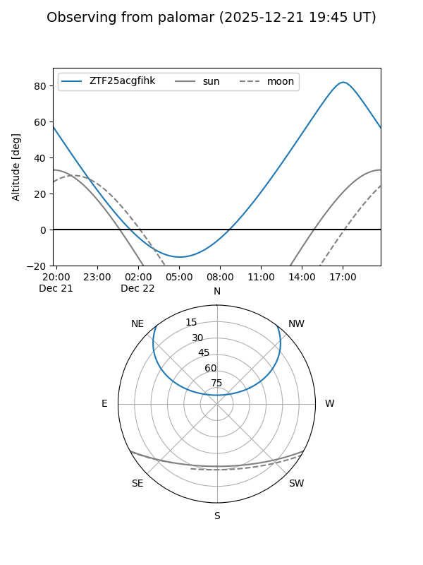

ZTF25acgfihk
Target ZTF25acgfihk at 2025-12-21 14:42
Aliases and brokers:
FINK: fink-portal.org/ZTF25acgfihk
Lasair: lasair-ztf.lsst.ac.uk/objects/ZTF25acgfihk
ALeRCE: alerce.online/object/ZTF25acgfihk
alt names
ZTF25acgfihk (ztf,fink_ztf)
Coordinates:
equatorial (ra, dec) = 229.7909,+41.44921
equatorial (HMS+DMS) = 15:19:09.82,+41:26:57.16
galactic (l, b) = (67.9812,+56.62399)
Flags:
Photometry:
last ztfr=19.64
2 ztfr detections
Lightcurve

Visibility


Additional plots